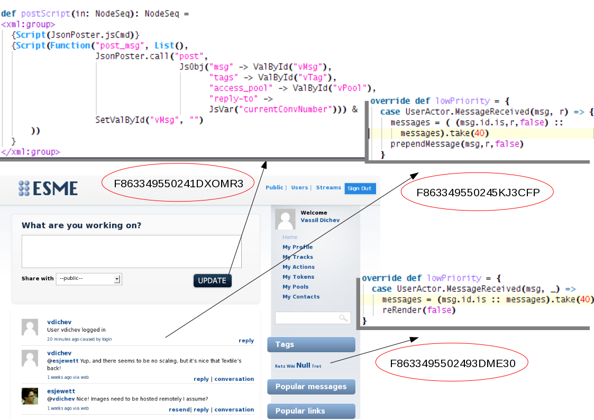

Apache ESME- Using Scala and Lift for social messaging
| Author: | Vassil Dichev |
|---|---|
| Date: | 15.06.2011 |
Esme who?
- Enterprise Social Messaging Experiment Environment
- Biggest open-source Lift application
- Only Apache project using Scala exclusively
ESME history
- 2007 David Pollak creates Skittr (884 lines)
- 2008 Three DemoJams (SAP)
- 2009 ESME moves to Apache Incubator
- 2010 ESME graduates to a top-level Apache project
Yet Another App
@jorgeortiz85

Jorge Ortiz
ANOTHER mobile social group chat photo sharing app! Exactly what I need!
Beyound Lift chat demo
- Real-time updates (years before Yammer)
- Pools (like Yammer groups)
- Retweets (months before Twitter)
- Built-in URL shortener
- Popularity stats (status.net)
- API (RESTful and Twitter-compatible)
- Actions (assemble bots/apps)
Action examples
| filter | perform |
|---|---|
| "bieber" | filter |
| #Scala | resend |
| to = @me | mailto:my@address.org |
| every 5 mins | rss:http://blog.esme.us/rss |
| pool:repl | scala |
Lift pitch
- Real-time updates with Comet
- Security
- Lightweight actors
- Modules
- ...and more: http://SevenThings.liftweb.net
Lift
@djspiewak
Daniel Spiewak
Lift: think outside the Box.
View first
Comet
<lift:comet type="TagCloud"/>
class TagCloud extends CometActor def render = { val messages = lookupMessages() <p> { ... } </p> } override def lowPriority = { case UserActor.MessageReceived(msg, _) => messages = (msg.id.is :: messages).take(40) reRender(false) } }
Mapper
val mb = findAll(By(user, userId), OrderBy(id, Descending), MaxRows(count))
Embrace immutability
- easy for concurrency
- easy to cache
- easy to distribute
Actors

Testing
"no follower's message in home timeline" in { post("/statuses/update.xml", followerClient, Nil, "status" -> "follower_msg") \\(<text>follower_msg</text>) get("/statuses/home_timeline.xml") !\\(<text>follower_msg</text>) }
Configure Ostrich
if (Props.getBool("jmx.enable", false)) StatsMBean("org.apache.esme.stats") val runtime = new RuntimeEnvironment(getClass) val config = new Config config("admin_text_port") = Props.getInt("admin_text_port", 9989) config("admin_http_port") = Props.getInt("admin_http_port", 9990) ServiceTracker.startAdmin(config, runtime)
Monitor sessions
SessionMaster.sessionWatchers +:= SessionInfoDumper Stats.makeGauge("liftSessions") { SessionInfoDumper.count.toDouble } object SessionInfoDumper extends LiftActor { private var sessionSize = 0 def count = sessionSize protected def messageHandler = { case SessionWatcherInfo(sessions) => sessionSize = sessions.size
Using Ostrich
Stats incr "messagesDelivered"
Lift modules
- Authentication
- OpenID
- LDAP
- Container-based
- Textile
- XMPP
LDAP
object myLdapVendor extends LDAPVendor myLdapVendor.configure(Map("ldap.url" -> "ldap://%s:%s".format(ldapSrvHost, ldapSrvPort), "ldap.base" -> ldapSrvBase, "ldap.userName" -> ldapSrvUsrName, "ldap.password" -> ldapSrvPwd, "ldap.authType" -> ldapSrvAuthType, "referral" -> ldapSrvReferral, "ldap.initial_context_factory" -> ldapSrvCtxFactory)) if(myLdap.bindUser(constructNameWithPrefix(name), pwd) && checkRoles(constructDistinguishedName(name))) {
Textile
MsgParser.parseMessage(in) map { lst => val xml = <message><body>{ lst map { // get rid of extra paragraphs case textile: Textile => paraFixer(textile.toHtml) } }</body>
Lift resources
| Simply Lift | http://simply.liftweb.net |
| Exploring Lift | http://exploring.liftweb.net |
| Lift in Action | 
|
Scala
@al3x
Alex Payne
… What fires me up about Scala is its pragmatism: good OOP, good FP, good type system. Very little dogma. A get-shit-done language.
Advanced Scala
- expressive
- extensible
- immutable structures
- actors
- XML support
- easy parsing
Express yourself
// extractor for last element of a List object ::> {def unapply[A] (l: List[A]) = l match { case Nil => None case _ => Some( (l.init, l.last) ) } } case Req(ApiPath ::> "statuses" ::> "user_timeline", this.method, GetRequest) => userTimeline
Functional meets OOP
override lazy val lineElem: Parser[Textile] = { not(blankLine) ~> (endOfLine | image | footnote_def | anchor | dimension | elipsis | copyright | trademark | registered | emDash | enDash | italic | emph | bold | cite | span | code | delete | insert | sup | sub | strong | html | single_quote | quote | acronym | atName | hashTag | charBlock) }
trapExit
- audience !? Questions
- audience ! ThankYou